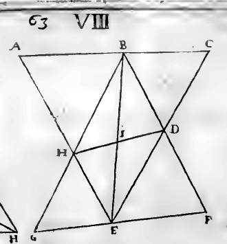

Proposition XIX: Fifteen Cases of Reciprocally Inscribed Triangles¶




Proposition XIX · Problem III (pp. 54–57, Tab. 8, Figs. 63–66)
Let two triangles be so fitted together that reciprocally the vertex of one ends on the base of the other, and thus their sides intersect: in such a figure I distinguish six ratios of lines, from which, any four being given, let it be proposed to find the remaining two.
There are fifteen cases of this problem; for so many are the binary combinations of six.
I. Let the four ratios GE to EF, AB to BC, AH to HE, and BD to DF be known; and let the two remaining GH to HB and FD to DB be sought. Let the two straight lines HD, BE be joined, cutting one another at I. Since in the Third Element, whose center is I and weights A; H–A; D–C; C, the three ratios AH to HE, ED to DC, and AB to BC are given, I shall also give the remaining two ratios (from Problem IX of Book I) HI to ID and BI to IE; wherefore since in a figure of the same Element, whose center is I and weights G; H–G; D–F; F, the three ratios GE to EF, HI to ID, and EI to IB are given, I shall show (from the same problem) the remaining two ratios GH to HB and FD to DB.
II. Let the two ratios AH to HE and ED to DC be sought, the rest being known; this case will be similar to the former.
III. Let the ratios we must discover be the two AB to BC and GE to EF, having the remaining four (take care however in this case that AC, GF are not parallel). Let AC, GF be produced so as to meet at I. Since then AB to BC is compounded from the ratios AB to BI and BI to BC; likewise GE to EF is compounded from the ratios GE to EI to EF; and in the First Element, whose weights are A, I, G and center is H, the two ratios GH to HB and EH to HA are given; and likewise in another figure of the same Element, whose weights are B, I, E and their center is D, the two ratios ED to DC and FD to DB are given; we shall disclose in the first figure the remaining two AB to BI and GE to EI; and in the second figure the remaining two BI to BC and EI to EF; therefore the ratios AB to BI to BC, that is AB to BC, are given; and likewise the ratios GE to EI to EF, that is GE to EF, Q.E.F.
f. 0072 · p. 55IV. Suppose we must now show the two ratios ED to DC and FD to DB, the remaining four being supposed. If the two AC, GF are parallel, what is proposed is already clear; if they are not, let us produce them as before so that they meet at I; and since in the First Element, whose weights are A, I, G and center is H, the two ratios AH to HE and GH to HB are given, we shall show (from Problem VI, Part I) the remaining two AB to BI and GE to EI; but the ratios AB to BC and GE to EF are given; therefore, having taken away the known ratios AB to BI from AB to BC, and GE to EI from the aforesaid GE to EF, the remaining ratios BI to BC and IE to EF will be known: wherefore, these two ratios being given in the First Element, whose weights are B, I, E and center is D, the remaining two BD to DF and DE to DC will become clear, Q.E.F.
V. But if the ratios to be investigated are AH to HE and BH to HG, we shall solve the problem by nearly the same reasoning; for given the two BD to DF and ED to DC in the First Element whose weights are B, I, E and center is D, the remaining two BC to BI and EF to EI become known; and since CB to BA and FE to EG are also supposed given, the remaining two IB to BA and IE to EG will also be given. Thus since in the First Element whose weights are A, I, C [G] and center is H, the two ratios IB to BA and IE to EG are known, we shall likewise show the remaining two AH to HE and GH to HB.
VI. Let the two ratios AH to HE and GE to EF be sought, the rest being given. If AC, GF are parallel, it is evident that AH to HE is in the same ratio as BH to HG, and therefore given. Next, since GE to EF is compounded from the ratios GE to AB, AB to BC, and BC to EF; while as GE is to AB, so is the given GH to HB; AB to BC is given, and as BC is to EF, so is the given CD to DE; therefore EF to EG, which is compounded from given ratios, will also be given.
But if AC, GF are not parallel, let them meet produced at I; and since in the First Element, whose weights are B, I, E and center is D, the two ratios BD to DF and ED to DC are given, we shall also render the remaining CB to BI and EI to FE known; and therefore since the known ratio CB to BA is compounded from the ratios CB to BI, which is known, and IB to BA, this too will be given; and therefore since in the First Element, whose weights are A, I, G and center is H, the two ratios IB to BA and BH to HG are given, we shall also display the remaining AH to HE and GE to EI as known: wherefore since GE to EF is compounded from the given ratios GE to EI to EF, this too will be clear.
f. 0073 · p. 56VII. We shall show the two ratios GH to HB and AB to BC in the same way; for the case is similar to the preceding.
VIII. Let the ratios GE to EF and GH to HB be sought, the remaining four being given. From the two given ratios ED to DC and FD to DB, BI to BC and EI to EF come to light; but the ratio compounded from AB to BI to BC is AB to BC, which is given; therefore the remaining ratio AB to BI will be given, and thus in the First Element, whose weights are A, I, G and center is H, since the two ratios AH to HE and AB to BI are given, we shall also give the remaining two GH to HB and GE to EI; now the ratio GE to EF is compounded from the ratios GE to EI and EI to IF [EF], which are given, so that too will become clear. And if AC, GF are parallel, we shall use the same reasoning as we used in the sixth case.
IX. But if the ratios to be investigated are AH to HE and AB to BC, this case will be similar to the preceding.
X. Let the two ratios to be found be GE to EF and ED to DC, the rest being previously known. If AC, GF are parallel, we shall show what is proposed as in the sixth case; but if GE, EF [AC, GF] are not parallel, produced they will meet at I; wherefore since the two ratios GH to HB and AH to HE are given, we shall also know the remaining two, namely AB to BI and GE to EI; now the given ratio AB to BC is compounded from the given ratio AB to BI and BI to BC; therefore this remaining ratio will also come to light; wherefore, given the two ratios BI to BC and BD to DF in the figure of the First Element, whose weights are B, I, E and center is D, we shall also show the remaining two ED to DC and EI to EF; wherefore the two ratios GE to EI and EI to EF are given; but from these is compounded the ratio GE to EF; therefore it too will not lie hidden.
XI. But if the ratios we must show are AB to BC and BD to DF, we shall demonstrate this part of the problem in the manner stated above.
XII. Let it now be required to find the two ratios AB to BC and CD to DE; and if AC, GF are parallel we shall use the same reasoning as we used in the sixth case; if not, let CA, FG produced meet at I. Given the two ratios GH to HB and AH to HE, we shall give the remaining two AB to BI and GE to EI; and given the two GE to EF and GE to EI, we shall make known the remaining EI to EF; wherefore, having the two EI to EF and BD to DF, we shall likewise know
f. 0074 · p. 57the two CD to DE and BI to BC; and having the two AB to BI to BC, from which is made the ratio AB to BC, this will likewise be given.
XIII. But if the two ratios to be made known are GE to EF and FD to DB, this case will be similar to the preceding.
XIV. If we wish to find the two ratios AH to HE and BD to DF when the rest are previously known, let GC be joined cutting the two HE, BD at I, K. Thus since in the figure of the First Element whose weights are A, C, G and center is H, the two ratios AB to BC and G [GH] to HB are clear, the remaining two AH to AI and IC to CG will be known; and likewise since in another figure of the First Element whose weights are C, G, F and their center is D, the two ratios ED to DC and GE to EF are given, the remaining two DF to DK and GC to CK will also become conspicuous; wherefore IC to KC (compounded namely from the two given IC to CG to CK) will be known; and therefore in the Third Element, whose weights are A; B–A; D–E; E and center is K, given the three ratios AB to BC, IC to KC, and ED to DC, the remaining two AI to AE and DK to DB will also be given, provided however that AE and BD are not parallel; therefore the ratios AH to AI to AE and DF to DK to DB are given, that is, the two ratios AH to AE and DF to DB: but if BD and AE are parallel, while AC and GF are by no means so, the problem will be impossible; to make this clear, let us draw from point E the line EL cutting DF at L, and produced through E let it be cut by line EK so that LE to EK is as FE to EG, and let BK be joined cutting AE at I. Therefore because of the parallels BF, AE, as BH is to HG, so BI will be to IK; and as FE is to EG, so LE to EK; while the ratios AB to BC and CD to DE are the supposed ones themselves; therefore if the case were possible, the ratio AH to HE would have to be the same as AI to IE; and likewise as BD is to DF, so would BD have to be to DL, which since it is not, nothing certain can be determined.
XV. & lastly. If the ratios to be shown are BH to HG and CD to DE, care must be taken as above that BG, CE are not parallel when AC, GF are not parallel; this case is similar to the above, and so the whole proposition holds.